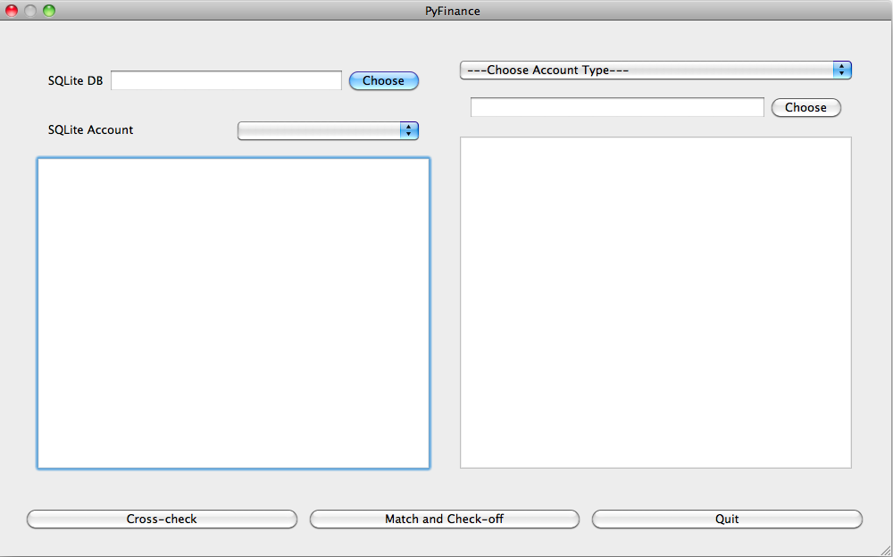

This is a simple set of scripts to match and check financial transactions. I use this to check statements against my MoneyDroid's SQLite database. It even has a GUI to do cross-checking.
Python
Email me if you are interested in extending the code

You can download this project in either zip or tar formats.
You can also clone the project with Git by running:
$ git clone git://github.com/yapkke/PyFinance